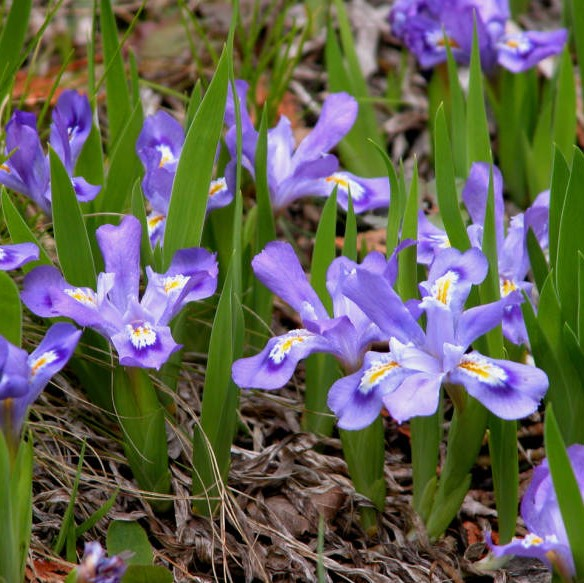
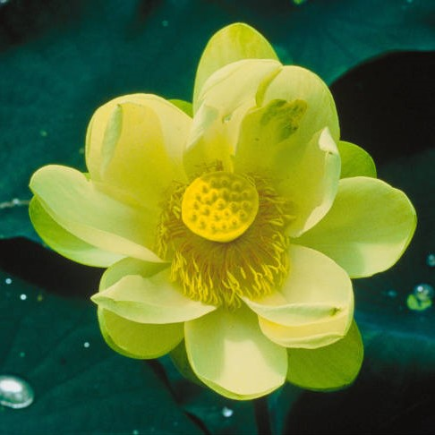
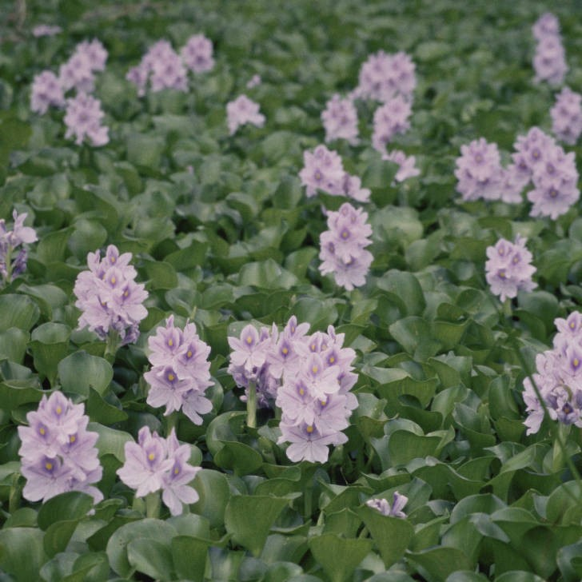

Posted April 4, 2019
|  |  |
|  |
Ramey, V. (2011, July 27). Water Hyacinth. [Photograph]. Retrieved from https://digitalmedia.fws.gov/digital/collection/natdiglib/id/13162/rec/1
Robertson, Carole. (2017, May 08). Water Lilies. [Photograph]. Retrieved from https://digitalmedia.fws.gov/digital/collection/natdiglib/id/25469/rec/5
Smith, Elise. (2008, April 18). Lotus flower. [Photograph]. Retrieved from https://digitalmedia.fws.gov/digital/collection/natdiglib/id/3589/rec/1
Trick, Joel/USFWS. (2017, April 08). Dwarf Lake Iris. [Photograph]. Retrieved from https://digitalmedia.fws.gov/digital/collection/natdiglib/id/25257/rec/1